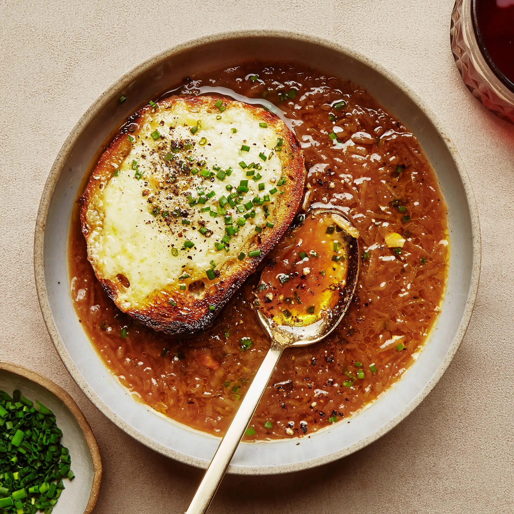

French Onion Soup

Description
French onion soup, or soupe à l'oignon, is a classic French dish of caramelized onions in broth,
topped with bread and cheese
Ingredients
- 1/2 cup unsalted butter
- 2 tablespoons olive oil
- 4 cups sliced onions
- 5 cups broth
- 4 slices french bread
- 4 slices provolone cheese
- 2 slices swiss cheese, diced
Steps
- Melt butter with olive oil in an 8-quart stock pot over medium heat. Add onions to butter and continually stir until tender and translucent. Do not brown the onions.
- Add broth, sherry, and thyme. Season with salt and pepper. Let simmer for 30 minutes. Meanwhile, preheat the oven's broiler.
- Ladle soup into oven-safe serving bowls and place one slice of bread on top of each (bread may be broken into pieces if you prefer). Layer each slice of bread with a slice of provolone, 1/2 slice diced Swiss and 1 tablespoon Parmesan cheese.
- Place bowls on a cookie sheet and broil in the preheated oven until cheese bubbles and browns slightly, 2 to 3 minutes.
- Serve hot and enjoy!